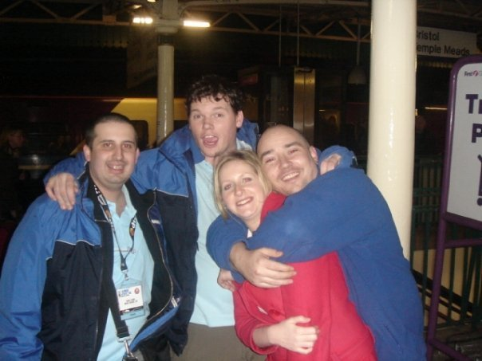
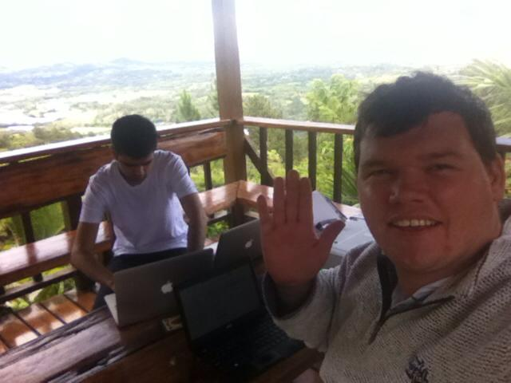
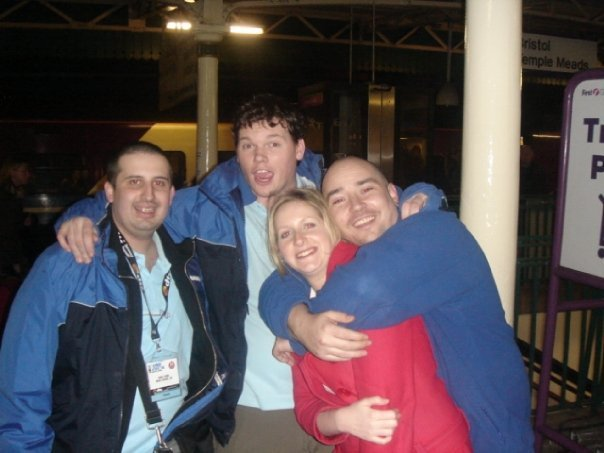
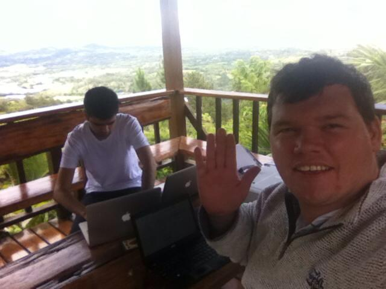

~ MORE THAN JUST MEDIA
An exciting tech startup is being launched from the Vale of Glamorgan. Wave (formerly 'Media Receive') provides a single solution for all technologies in homes and small businesses. Later on this year they will provide a range of all-in-one Media Centers, delivering to the user ‘More than just media’.
The company started with four Ex-Forces technicians who served as Corporals in the Royal Corps of Signals. The only female of the team is Ex Royal Air Force.
Wave was encorporated by networking and telecommunications expect Sion Buckler and James Steward, who specialises in satellite communications and multimedia. The other members of the team consist of Mark Simpson, whose specialism is networking, mobile telecommunications and CCTV, Jackie Burns (Classified CV but known to speak many languages), James Lawland who has a passion for home multimedia and many others such as Armani Vashi who manages the development teams.
In a nutshell the company (through its global network of licenced distributors) is able to provide a pioneering smart-home solution much more advance than the likes of Alexa and Google Home Hub, with the added addition of installation, service and support. Wave is effectively a FREE Linux-based Operating System (much like Android) and runs on a Single Board Computer (SBC), which fits in the palm of your hand, uses minimal energy and cost next to nothing. The end result is a plug & play solution for faster and more secure internet and a single dashboard (accessible locally and remotely) which provides a range of apps on one menu: including multi-room media (satellite/iptv), ip camera surveillance, lighting/appliance control, energy monitoring and even vehicle tracking using USSD Technology e.g. Contract-Free Internet.
Sion Buckler, also a fluent Welsh speaker from Cardiff, said “Wave is now the highest-end, lowest-cost & simplest-to-install smart home technology on the market today, the patents awarded by Google prove this. Wave is effectively an Operating System for a home, as oppose to just the appliances within our homes. Unlike Google's Home Hub and Amazon's Alexa products, Wave doesn't use or depend on microphones, so it cannot listen and spy on you as these other popular products have been reported doing.”
James Steward who came from Sutton to help start the business said “We are the only business of our kind - providing a 24/7, 365 smart home/ network. We understand that no matter what time of day or night a problem arises, you need support there and then and that’s where we come in.”
The team of engineers have also bought several properties in the region and become involved in their new community at a local-level, most recently providing technical support for the opening of a local skate park "The Knap", sourcing technology prizes and participating in Road Safety campaigns outside of office hours.


 
